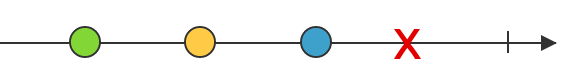

Introduction to
Reactive Programming
with RxJS & Angular2
by Carl Vuorinen / @cvuorinen
Carl Vuorinen
Reactive == code that
reacts to changes
Instead of imperative,
where the code executes linearly
 ReactiveX
ReactiveX
An API for asynchronous programming
with observable streams
ReactiveX Languages
Everything is a Stream
Streams are like collections
except a bit different
Streams are Everywhere
Anatomy of a Stream
Iterable stream
vs.
Observable stream
Observable stream
public class Observable {
Subscription subscribe(Observer observer) { ... }
}
public interface Observer {
void onCompleted();
void onError(error);
void onNext(value);
}
public interface Subscription {
void unsubscribe();
boolean isUnsubscribed();
}
function Observable() { }
/**
* @param {Observer} observer
* @returns {Disposable}
*/
Observable.prototype.subscribe = function (observer) { ... }
function Observer() { }
Observer.prototype.onNext = function (value) { ... }
Observer.prototype.onError = function (error) { ... }
Observer.prototype.onCompleted = function () { ... }
/**
* @param {Function} onNext
* @param {Function} onError
* @param {Function} onCompleted
* @returns {Disposable}
*/
Observable.prototype.subscribe = function (onNext, onError, onCompleted) { ... }
Most important message
We have to start thinking in terms of streams
Live in the moment. Do not forget nor dwell on the past, but do forgive it. Be aware of the future but do not fear or worry about it. Focus on the present moment, and that moment alone. Dalai Lama about programming with Streams
Operators
- map
- reduce
- filter
- scan
- flatMap
- merge
- zip
- switch
- and many more...
- many many many more
Visualization with
Marble Diagrams

ASCII diagrams
// letters:
// -----a-----b-----c-----d-----e-----f-----|
const uppercase = letters.map(x => x.toUpperCase());
// -----A-----B-----C-----D-----E-----F-----|
const delayed = uppercase.delay(1000);
// ---------------A-----B-----C-----D-----E-----F-----|
const firstThree = delayed.take(3);
// ---------------A-----B-----C|
Hot vs. Cold Observables
Each subscription
gets same values
gets same values
Cold Observables
are not shared
are not shared
const source = Rx.Observable
.interval(1000)
.take(5)
source.subscribe(
(x) => print("x = " + x)
);
Rx.Observable
.fromEvent(document, 'keyup')
.map(event => event.keyCode)
.filter(key => key > 47 && key < 91)
.map(key => String.fromCharCode(key))
.subscribe(key =>
print(`You pressed: ${key}`))
const click$ = Rx.Observable
.fromEvent(document, 'click')
const clickCount$ = click$
.buffer(() => click$.debounce(500))
.map(events => events.length)
clickCount$
.filter(count => count == 1)
.subscribe(() =>
print('Nice click'))
clickCount$
.filter(count => count == 2)
.subscribe(() =>
print('Wow, such doubleclick!'))
clickCount$
.filter(count => count > 2)
.subscribe(() =>
print('So many click, much WOW!!1!'))
Take small & simple events
and compose them to
create more complex events.
Angular2
Has RxJS as a dependency
Uses the new version 5 (which is still in beta)
AsyncPipe
import {AsyncPipe} from "angular2/common";
@Component({
selector: "list",
pipes: [AsyncPipe],
template: `<h4>{{ title | async }}</h4>
<ul>
<li *ngFor="#item of items | async">{{ item }}</li>
</ul>`
})
export class List {
@Input() title: Observable<string>;
@Input() items: Observable<string[]>;
}
Subscribes to the Observable
AsyncPipe & OnPush
import {AsyncPipe} from "angular2/common";
import {ChangeDetectionStrategy} from "angular2/core";
@Component({
selector: "list",
pipes: [AsyncPipe],
changeDetection: ChangeDetectionStrategy.OnPush,
template: `<h4>{{ title | async }}</h4>
<ul>
<li *ngFor="#item of items | async">{{ item }}</li>
</ul>`
})
export class List {
@Input() title: Observable<string>;
@Input() items: Observable<string[]>;
}
Control & ngFormControl
import {Control} from "angular2/common";
@Component({
selector: "search",
template: `<input [ngFormControl]="search">`
})
export class Search {
search: Control = new Control();
values: Observable<string> = this.search.valueChanges;
}
DIY valueChanges Observable
import {ViewChild} from "angular2/core";
@Component({
selector: "search",
template: `<input #search>`
})
export class Search implements AfterViewInit {
@ViewChild('search') searchInput;
valueChanges: Observable<string>;
ngAfterViewInit() {
this.valueChanges = Observable
.fromEvent(this.searchInput.nativeElement, 'change')
.map(event => event.target.value);
}
}
Http
import {Http} from "angular2/http";
@Injectable()
export class GithubSearch {
private baseUrl = "https://api.github.com";
constructor(private http: Http) {}
searchUsers(term: string): Observable<string[]> {
return this.http.get(this.baseUrl + "/search/users?q=" + term)
.map(response => response.json())
.map(result => result.items.map(item => item.login))
.share();
}
}
To prevent duplicate requests
@Component({
selector: "autocomplete",
pipes: [AsyncPipe],
template: `<input [ngFormControl]="search">
<ul>
<li *ngFor="#suggestion of suggestions | async">
{{ suggestion }}
</li>
</ul>`
})
export class Autocomplete {
public search = new Control();
public suggestions: Observable<string[]>;
constructor(github: GithubSearch) {
this.suggestions = this.search.valueChanges
.debounceTime(400)
.map(keyword => keyword.trim())
.filter(keyword => keyword.length > 0)
.distinctUntilChanged()
.map(keyword => github.searchUsers(keyword))
.switch();
}
}